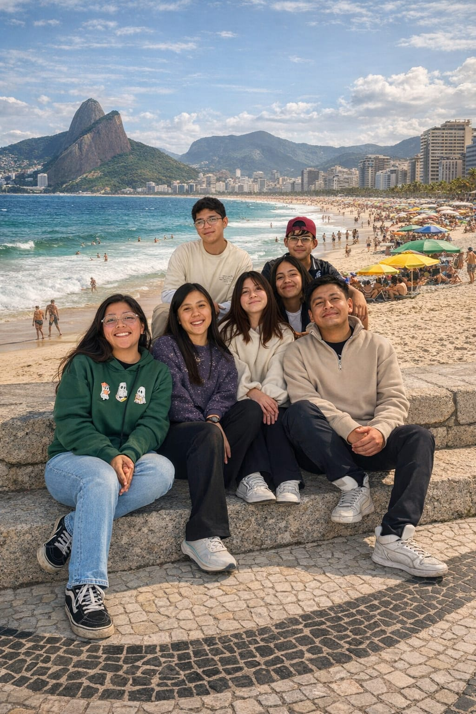
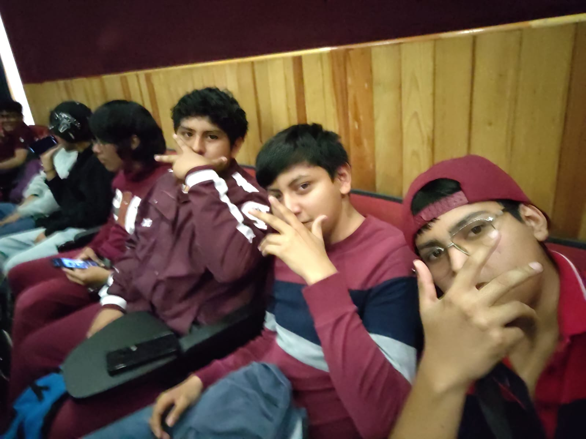
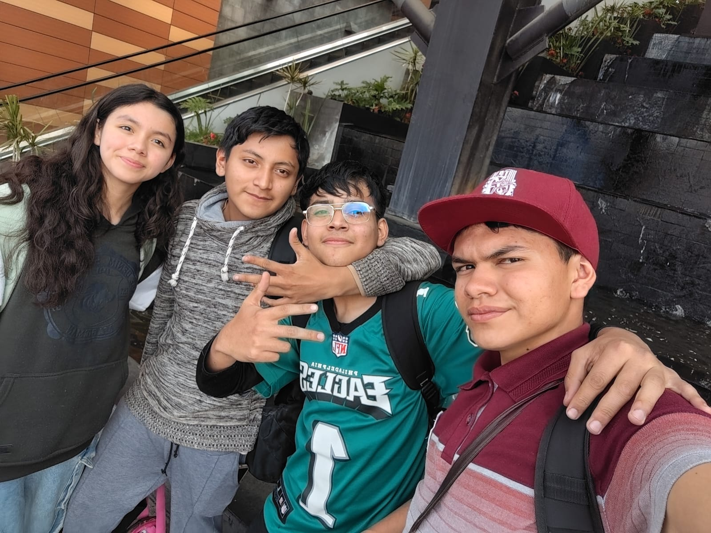
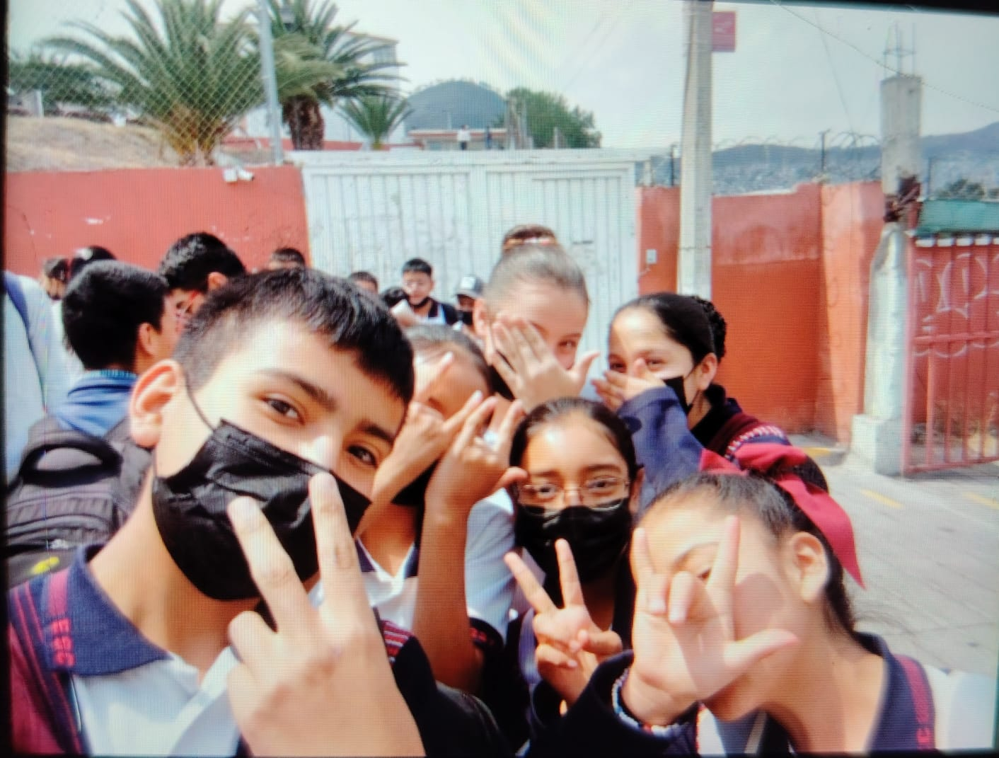

mis pilares
Mi familia y Mis amigos

Mi familia
Vivo en Ecatepec, Estado de México. Mi familia y yo somos un grupo muy unido, donde siempre nos apoyamos mutuamente en las buenas y en las difíciles. Mi mama ha sido mi mayor ejemplo; me han enseñado a ser honesto, la humilde y responsable, y son el pilar fundamental de mi vida. Cuento con primos con quienes comparto momentos inolvidables, risas, aprendizajes.
Mis amigos :



También tengo grandes amigos, personas que conozco desde años, se han convertido en una parte muy importante de mi vida. Con ellos comparto no solo momentos de diversión, sino también consejos, metas y experiencias que nos ayudan a crecer como personas. Para mí la lealtad y la confianza son muy importantes, y sé que siempre puedo contar con ellos, al igual que ellos pueden contar conmigo en cualquier momento.